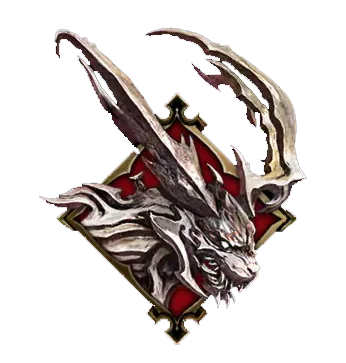
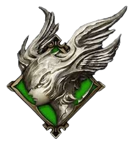
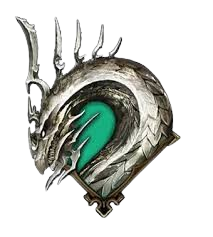
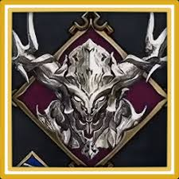
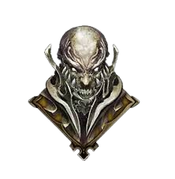

(IFRIT)
|Fire|
|Ifrit, the Warden of the Inferno, is the Eikon of Clive Rosfield in Final Fantasy XVI. Ifrit is the counterpart to the Phoenix, the original Eikon of Fire. Clive Rosfield uses Ifrit to do battle with other Eikons in his quest to end the persecution of Bearers and save the realm from the Blight.|

(GARUDA)
|Wind|
|Garuda is the aspect of Wind and one of the adversarial Eikons Clive Rosfield will encounter in Final Fantasy XVI. Garuda can unleash powerful gales, create tornados, and fly with her mighty wings. The Dominant of Garuda is Benedikta Harman—the Warden of the Wind from the Kingdom of Waloed.|

(LEVIATHAN)
|Water|
|Leviathan is an Eikon that awakened as a result of Ultima planting a "seed" of his kin's power in the newly-created humans of Valisthea, with Leviathan awakening in the "Motes of Water" people who originally dwelled in southern Ash.|

(ODIN)
|Dark|
|Odin is an Eikon that resembles an armored knight who, riding atop a spectral steed, wields the fabled black blade to sunder foes. The man who wields Odin's incredible power is his Dominant, Barnabus Tharmr, a King with a passion for chaos and a lust for battle—making him a deadly adversary in Final Fantasy XVI.|

Titan
|Earth|
|Titan's Tale is Filled With Destruction
He serves the Dhalmekian Republic through the bloodlines of the Motes of Earth tribe on Valisthea. Hugo wields Titan's powers with ambition, gaining the role of economic advisor in the Dhalmekian Parliament because of his association with the Eikon.|